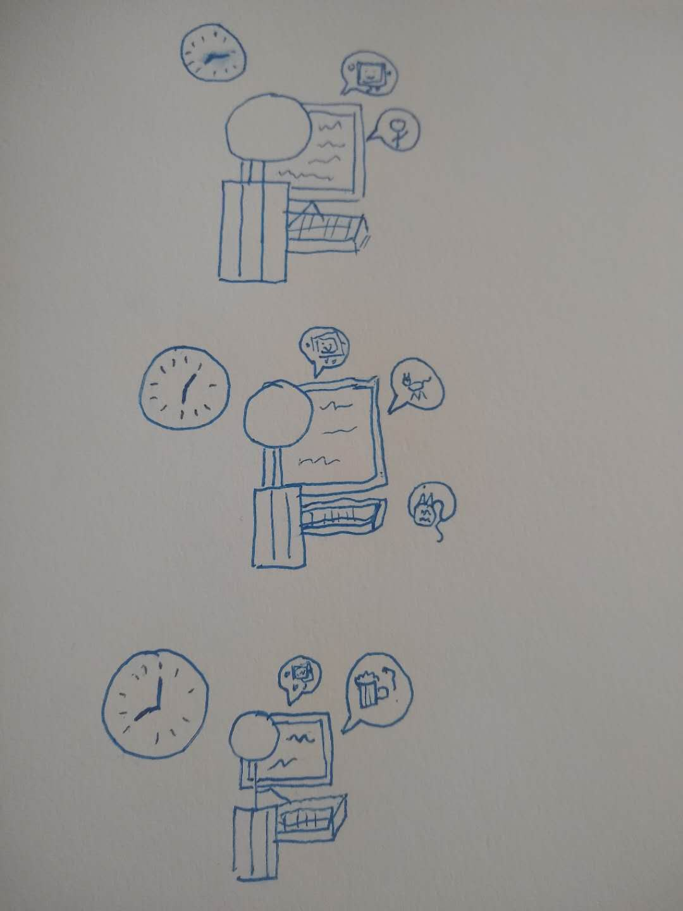
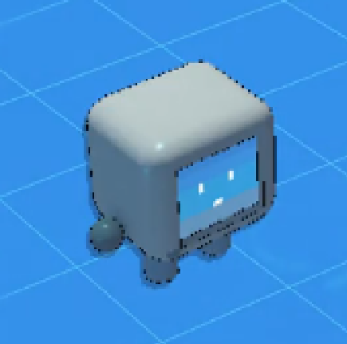

Serendipity bot is a bot that integrates with your team communication tool (like Slack or Microsoft Team) and brings intuitive, naturalistic interaction to remote workers. Instead of large team-building exercises, which can often feel intimidating or forced, Serendipity bot seeks to emulate the smaller things that help teammates bond -- little conversations in the hallway, doodles in a colleague’s notebook, and other ephemeral acts of familiarity that are lacking in remote work.
Dale logs on and sorts through information on Slack Channels, deciding what they will work on for the day.
Dale communicates with their teammates only when necessary, to bring up problems or collaborate on solutions.
Possibly posts in their company’s ‘random’ channel, but doesn’t really take the time to engage there.
After work, Dale logs out of the company’s Slack channel and attends to their personal life. They have no reason to connect with colleagues outside of work, since virtual communication is more difficult than seeing real-life friends.
Dale sits down at his computer in the morning to start his day of working remotely. Today, he’s working in a cafe in Vancouver, Canada.
He’s edited his preferences in CultureBot before with the times where he usually feels most comfortable socializing, how often he’d like to interact with his teammates, what kinds of activities he’s most interested in engaging in and other tidbits.
When he logs on, CultureBot pops up to let him know that another of his teammates, Mary, has also recently started working. It sends him a doodle of something interesting which she sees working today: she’s in France and there’s a really cute cat at the apartment she’s staying in. Dale sends back a picture of the tea cake he’s ordered and a short message saying hi and wishing her well.
Later, Dale lets CultureBot know he’s going to have lunch, and gets back a list of people who’ve also indicated they’re about to eat. CultureBot notes that though Mary’s also going to eat soon, Dale hasn’t talked with Shivani in engineering for a while, and asks if they’d like to chat. Dale says yes and learns some new things about what Shivani has been up to and what the engineering team is doing as they eat their meals.
After lunch, Dale puts out a request on CultureBot for a song to get him pumped up while he gets back to work. This request pops up on the notifications of three other members of his company who have the bot turned on, and he gets a few songs back. One of them really catches his interest, and he makes a note to talk to the coworker that sent it to him later.
As the workday closes, Dale signals to CultureBot that he’s going to sign out soon. The bot lets him know two of his coworkers, Anna and Wang, are trading travel tips in the travel channel, and since Dale has listed travel as one of his interests previously it asks if he’d like to join the conversation and share a drink with them as he finishes work. He jumps in and they share a few of the things they’ve done recently before Dale logs out for the night.
The next day, Dale turns off CultureBot, since he has a big project he really wants to focus on. He zones in that day and the next and actually forgets about the bot for a little bit, and doesn’t interact with his teammates as much. After a few days, the bot pings him with a quick notification to ask if he’s interested in interacting with his teammates a little more, and Dale, realizing he’s been a bit too heads down, turns the bot back on to chat a little with his teammates.
  Comments? Questions? Concerns? Email me here!